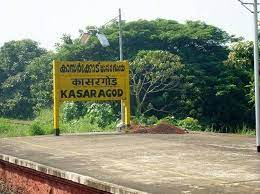
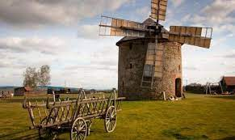

Kasaragod is a municipal town and administrative headquarters of Kasaragod district of Kerala state in India. Established in the year 1966, Kasaragod was the first municipal town in Kasaragod district.
Built almost 300 years ago, Bekal Fort is considered as one of the largest and most preserved forts in Kerala. Nestled in the lap of nature, Bekal Fort is a historic fort surrounded by a beautiful beach offering an enchanting view of Arabian Sea from its high observation tower where once the cannons were placed. The beautiful walkway, illuminated beach and the grand architecture of the Bekal Fort make this place a favourite among the masses. The fort was featured in the popular A R Rahman song ' Tu hi re'. Located at 65 kms away from Mangalore, Bekal Fort is a keyhole-shaped lofty structure that stands still against the rocky shores of sea amusing its visitors with its finesse. The whole purpose of erecting this structure by Shivappa Nayaka of Bednore in the year 1650 was pure of defence.

In the northern tip of Kerala lies the Ananthapura Lake Temple, the only lake temple in Kerala. The rectangular lake, supplied with regular spring water, hosts this magnificent temple. It is considered the moolasthanam (original abode) of Lord Ananthapadmanabha, the deity of the famous Sree Padmanabhaswamy Temple in Thiruvananthapuram. This 9th-century temple situated 30 km from Bekal in Kasaragod district. The view of the hillocks from the temple is extremely famous. Babia, the vegetarian crocodile and temple guardian, is popular among all the visitors. The drive to the temple in itself is extremely peaceful and calming.

Malom is a small town that lies lazily near the Western Ghats in Kasaragod district. Known as the ‘Coorg’ of Kerala, it is blessed with Nature’s bounty. The word ‘Malom’ comes from the Malayalam word Malakalude lokam (the world of hills). Malom can be developed into a bio-eco tourist centre given the fact that it offers possibilities for trekking, waterfalls, and adventure safari to the nearby hills.
